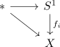
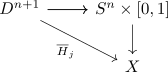
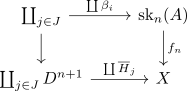
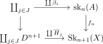
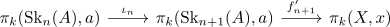
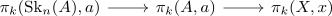

CW-Approximation
Proposition
Let $(X, \mathcal{T})$ be a topological space.
Then there exists a CW-Complex $A$ and a weak homotopy equivalence $A \rightarrow X$
Proof
w.l.o.g. let $X$ be pathconnected.
Otherwise, apply the construction for each path component, then using coproduct of cw complexes as cw complex this is also a cw complex.
chose a basepoint $x \in X$ an inductively construct maps
from an \(n\)-dimensional CW complex $\mathrm{SK}_n(A)$ to $X$ such that
is a bijection for $k < n$. and surjective for $k = n$
inductive start
consider
Furthermore, choose a generators $g_i \in \pi_1(X,x)$ represented by maps $f_i: S^1 \rightarrow X$ (cf. element of a homotopy group and map out of the sphere)
Then use the wedge product for

with the induced map
induction step
Choose generators of the kernel
and represent them by maps
Then it follows, that $f_n \circ \beta_j$ is nullhomotopic hence there exists a homotopy
where
is constant.
Thus there exists the factorization

where
and the restriction to the boundary is given by
since
This results in a diagram

Define $\mathrm{Sk}_{n+1}(A)$ as the pushout of

using the universal property of the pushout for $f_n, \overline{H}_n$, we get an extended map
Furhtermore for $k < n$, there exists the induced group-homomorphisms

Here the composition is an isomorphism by induction hypothesis and $\iota_n$ by isomorphism of homotopy groups between skeleton and CW complex By two out of three for isos, it follows, that
is also an iso
For $k = n$, the composition is surjective by induction hypothesis. Hence by precomposition as epimorphism implies epimorphism it follows, that
is a surjection
By surjection on homotopy groups between skeleton and CW complex, it holds, that
is a surjection.
Then it follows, that <>
Therefore, the second map is injective and hence an iso.
Choose generators $\gamma_k$ of $\pi_{n+1}(X,x)$ and define
This is again a cw complex, as the wedge product is defined as pushout, with
for $k \leq n$
Furthermore, there exists a map
induced by $\gamma$ and $f_{n}$
The map is surjective on $\pi_{n+1}$, as $\gamma_k$ is given on $\bigvee_{k} S^{n+1}$ and an isomorphism on $\pi_k$ fo r$k \leq n$
TODO
final
let
then there exists a unique continuous map
induced by
Then for any $k \geq 0$ one can choose $n > $ and have

where again by 2 out of 3 for isos, teh map
is an isomorphism